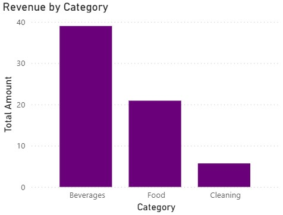
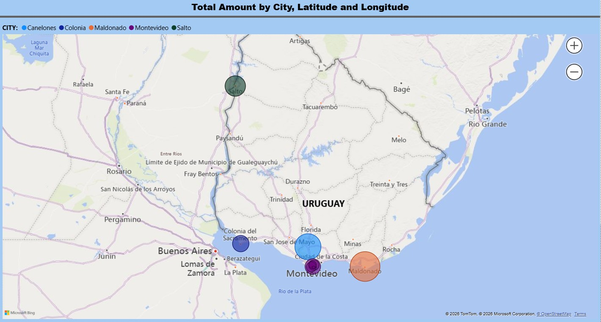
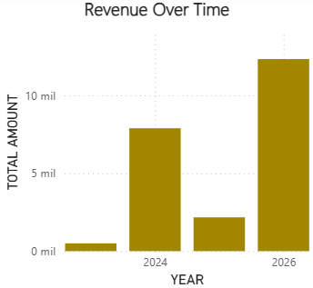

Turning data into business decisions
SQL Server | Power BI | Data Analysis
Data Analyst with experience in SQL Server and Power BI. Focused on transforming raw data into actionable business insights.
High number of failed transactions with no clear root cause, impacting business operations and response times.
Analyzed database logs and system behavior, identified patterns in failures, and documented troubleshooting procedures.
Reduced incident resolution time and improved visibility for support teams and internal stakeholders.
Inconsistent data and discrepancies between system outputs and expected results, affecting reporting accuracy.
Performed SQL-based analysis to validate data, identify inconsistencies, and trace issues back to their source within the system.
Improved data reliability and reduced time spent investigating reporting issues.
Lack of visibility into incident volume, status, and resolution performance across support teams.
Built dashboards and reports to track incidents, monitor progress, and provide visibility into operational performance.
Improved tracking of incidents and enabled better prioritization and response management.
The company lacks visibility on which products drive revenue.
Designed a SQL data model and Power BI dashboard to analyze sales by category, product and time.
Beverages generate the highest revenue and sales are concentrated in a small set of products.

The business lacks visibility on geographic performance and revenue distribution.
Built a SQL-based data model and Power BI dashboard to analyze orders, revenue and geolocation patterns.
Montevideo shows the highest order density, while some regions generate higher revenue with fewer orders.

The business lacks visibility on customer value and segmentation.
Designed a SQL data model and Power BI dashboard to analyze customer behavior, revenue and segmentation.
A small group of customers drives most revenue, while many customers fall into low-value or at-risk segments.

Tech Stack:
SQL Server • Power BI • Data Modeling • Data Analysis